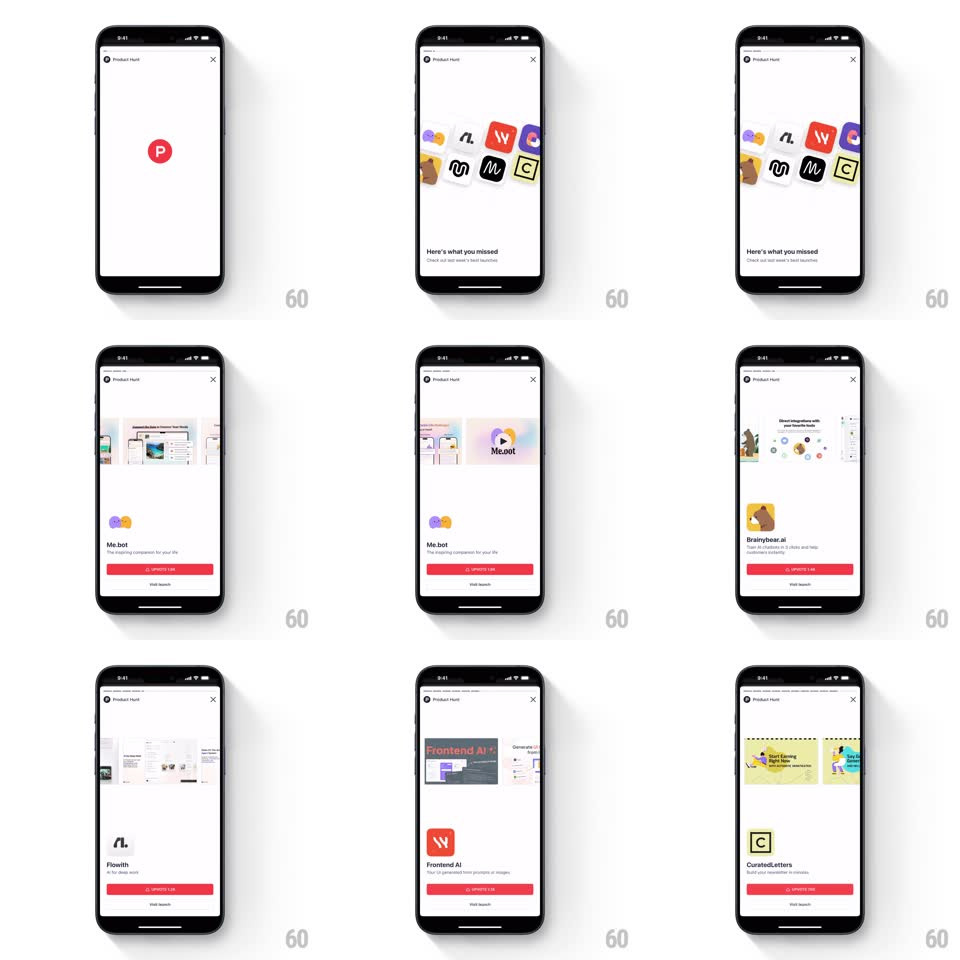

Media
Frame-by-frame

Rebuild this animation 1:1: Product Hunt's Pulse story - a weekly top-launches recap in story format: the red P pulses in, a cluster of product icons scatters into place, then each launch gets its own auto-advancing card.

Rebuild this animation 1:1: Product Hunt's Pulse story - a weekly top-launches recap in story format: the red P pulses in, a cluster of product icons scatters into place, then each launch gets its own auto-advancing card. ## Integration Integration: stack-agnostic spec - springs given as stiffness/damping, timed motions as duration + curve; map every value to your framework and animation library of choice. ## Scene Opened from the "Last week's top launches" list. A white story viewer (Product Hunt header, close X, story progress bars up top). Beat one: the red P logo on white. Beat two: "Here's what you missed" with a loose pile of product icons. Then one card per launch: image strip on top, product icon, name, tagline, and a red upvote-count pill button with a "Visit launch" text link below. ## Motion spec Pattern: story-format recap with springy icon scatter. - Entry: the story viewer slides up over the feed (spring ~360/28); progress bars appear, the active one filling over 4s per card. - Logo beat: the red P scales in with a pulse (scale 0.6 to 1.08 to 1, spring ~380/18), then morphs - its circle expands and crossfades into the icon-cluster beat. - Icon cluster: 8-10 product icons fling in from center with random rotations (+-20deg), settling into a loose pile (spring ~300/16, staggered 40ms); "Here's what you missed" rises beneath (translateY 12px, 250ms). - Launch cards: each card's image strip slides in from the right (300ms), the product icon pops (scale 0.5 to 1, spring ~420/20), name and tagline stagger up (translateY 10px, 200ms, 70ms apart), and the red pill button fills last (scale 0.9 to 1, 200ms). - Cards auto-advance on the progress timer or on tap-right; tap-left goes back; swipe down dismisses (tracks finger 1:1, scrim fading, release past 30% dismisses with accelerating slide, otherwise springs back). ## Calibration - Keep story pacing snappy: 4s per card, and every entrance under 500ms total. - The red pill button is the only red element per card (after the logo beat) - it owns the accent. ## Reduced motion Cards crossfade; no icon scatter. ## Don't miss - The icon pile is deliberately messy (overlapping, rotated) - don't align it into a grid. - The feed behind stays visible at the edges on drag-to-dismiss.